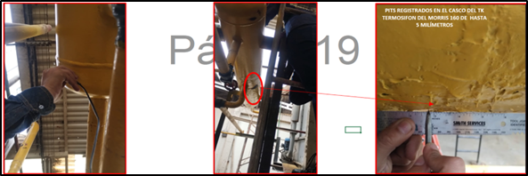

Ultrasonido Industrial (UT)
Servicio especializado de inspección por ultrasonido para detectar discontinuidades internas en soldaduras, tuberías y componentes metálicos. Inspector END Nivel II.
Contacto directo
Bogotá – Colombia
WhatsApp: +57 316 872 6521
Email: jhs.com.co@gmail.com
🔍 UT en Soldaduras
Defectología para detectar falta de fusión, inclusiones, grietas internas.
Abrir página📏 Medición de Espesores
Evaluación de corrosión y determinación de espesor remanente en campo.
Abrir página📄 Informe Técnico END
Registro fotográfico, reporte QA/QC y recomendaciones de aceptación.
Solicitar informe📸 Inspección UT en Soldaduras

Evaluación de discontinuidades internas en soldaduras estructurales.
📸 Medición de Espesores

Determinación de espesor remanente en tuberías y componentes metálicos.